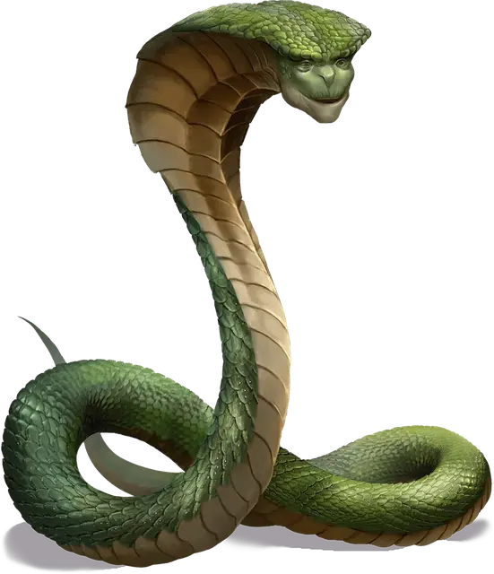

Охранная нага
Guardian Naga
Большой Монстр, законно-добрый

Класс Доспеха 18 (природный доспех)
Хиты 127 (15к10 + 45)
Скорость 40 футов
| мод | спас | ||
|---|---|---|---|
| СИЛ | 19 | +4 | +4 |
| ЛОВ | 18 | +4 | +8 |
| ТЕЛ | 16 | +3 | +7 |
| мод | спас | ||
|---|---|---|---|
| ИНТ | 16 | +3 | +7 |
| МДР | 19 | +4 | +8 |
| ХАР | 18 | +4 | +8 |
Иммунитет к урону яд
Иммунитет к состояниям очарование, отравление
Чувства тёмное зрение 60 футов, пассивное Восприятие 14
Языки Общий, Небесный
Опасность 10 (5900 опыта)
Бонус мастерства +4
Среда обитания Лес, Арктика
Особенности
Восстановление. Если нага умирает, она возвращается к жизни через 1к6 дней и восстанавливает все хиты. Только заклинание исполнение желаний [wish] может прекратить действие этой особенности.
Использование заклинаний. Нага является заклинателем 11-го уровня. Ее базовой характеристикой является Мудрость (Сл спасброска от заклинания 16, +8 к попаданию атаками заклинаниями), и ей для накладывания заклинаний нужны только вербальные компоненты. У неё подготовлены следующие заклинания жреца:
• Заговоры (неограниченно): починка [mending], священное пламя [sacred flame], чудотворство [thaumaturgy];
• 1 уровень (4 ячейки): лечение ран [cure wounds], приказ [command], щит веры [shield of faith];
• 2 уровень (3 ячейки): удержание личности [hold person], умиротворение [calm emotions];
• 3 уровень (3 ячейки): подсматривание [clairvoyance], проклятие [bestow curse];
• 4 уровень (3 ячейки): изгнание [banishment], свобода перемещения [freedom of movement];
• 5 уровень (2 ячейки): небесный огонь [flame strike], обет [geas];
• 6 уровень (1 ячейка):истинное зрение [true seeing].
Действия
Укус. Рукопашная атака оружием: +8 к попаданию, досягаемость 10 футов, одно существо. Попадание: Колющий урон 8 (1к8 + 4), и цель должна совершить спасбросок Телосложения Сл 15, получая урон ядом 45 (10к8) при провале, или половину этого урона при успехе.
Плевок ядом. Дальнобойная атака оружием: +8 к попаданию, дистанция 15/30 футов, одно существо. Попадание: Цель должна совершить спасбросок Телосложения Сл 15, получая урон ядом 45 (10к8) при провале, или половину этого урона при успехе.
Описание
Мудрые и добрые наги стражи охраняют священные места и предметы с магической силой от попадания в злые руки. В своих потайных убежищах они исследуют заклинания и вынашивают запутанные планы, чтобы сорвать злые замыслы врагов.
Охранная нага не ищет насилия, предупреждая нарушителей, а не атакуя. Только если противник упорно атакует нагу, она бросается на врага с заклинаниями и ядовитой слюной.
См. дополнительно статью: "Бестиарий: Наги"